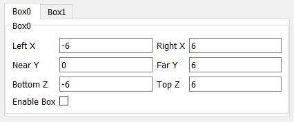

Overview
===========
This lab demonstrates the use of TI mmWave sensors to count and track multiple people simultaneously.
Detection and tracking algorithms run onboard the IWR6843ISK mmWave sensor and are used to localize people and track their movement with a high degree of accuracy.
mmWave sensors can reduce false detections from challenging environments such as direct sunlight, no-light, fog, or smoke, and are particularly suited for privacy-conscious applications.
In this demonstration, localization and tracking is performed upon any moving object in the scene; a new feature allows static objects to be ignored until a person is determined to have stopped moving.
The IWR6843ISK mmWave sensor outputs a data stream consisting of 3 dimensional point cloud information and a list of tracked objects which can be visualized using the software included in this lab.
[[r! Device Version: ES2.0
This lab is only compatible with ES2.0 Devices.
]]
<img src="images/pplcount_overview_block2.png" width="450"/>
Quickstart
===========
1. Hardware and Software Requirements
-----------
### Hardware
Item | Details
--------------------------|-----------------
Device | [Industrial mmWave Carrier Board](http://www.ti.com/tool/MMWAVEICBOOST) and [IWR6843ISK](http://www.ti.com/tool/IWR6843ISK).
Mounting Hardware | The EVM needs to be mounted at a height of ~1.5-2.5m with a slight downtilt. An [adjustable clamp style smartphone adapter mount for tripods](https://www.amazon.com/Vastar-Universal-Smartphone-Horizontal-Adjustable/dp/B01L3B5PBI/) and a [60-75" tripod](https://www.amazon.com/Neewer-Portable-centimeters-Camcorder-kilograms/dp/B01N6JCW8F/) can be used to clamp and elevate the EVM. This is only an example solution for mounting; other methods can be used so far as setup specifications are met.
Computer | PC with Windows 7 or 10. If a laptop is used, please use the 'High Performance' power plan in Windows.
Micro USB Cable | Due to the high mounting height of the EVM, an 8ft+ cable or USB extension cable is recommended.
Power Supply | 5V, >3.0A with 2.1-mm barrel jack (center positive). The power supply can be wall adapter style or a battery pack with a USB to barrel jack cable.
### Software
Tool | Version | Required For |Download Link|
----------------------------|---------------------------|---------------|-------------|
mmWave Industrial Toolbox | Latest | Contains all lab material. | [mmWave Industrial Toolbox](http://dev.ti.com/tirex/explore/node?node=AJoMGA2ID9pCPWEKPi16wg__VLyFKFf__LATEST)
TI mmWave SDK | 3.3.0.x | Compile People Counting Lab | [TI mmWave SDK 3.3.0.x](http://software-dl.ti.com/ra-processors/esd/MMWAVE-SDK/latest/index_FDS.html) and all the related tools are required to be installed as specified in the [mmWave SDK release notes](http://software-dl.ti.com/ra-processors/esd/MMWAVE-SDK/latest/exports/mmwave_sdk_release_notes.pdf)
Uniflash | Latest | Quickstart Firmware | [Download offline tool](http://www.ti.com/tool/UNIFLASH) or use [cloud version](https://dev.ti.com/uniflash/#!/)
2. Physical Setup
-----------
1. Follow the instructions for [Hardware Setup of ICB for Functional Mode](../../../common/docs/hardware_setup/hw_setup_antenna_module_and_carrier_for_functional.html)
2. For best results, the EVM should be positioned high enough to be above the top of tracked objects and with a slight down tilt.
The aim is to position the EVM so that the antenna beam can encompass the area of interest.
If the down tilt is too severe, noise from ground clutter would increase and the effective sensing area would decrease.
If threre is no down tilt, counting performance would be worse for cases in which one person is in line with and shielded by another person.
Given the antenna radiation pattern of the EVM, consideration should be taken to not mount the EVM too close or oriented with beam directed to the ceiling as this can increase the noise floor and result in less optimal performance.
<img src="images/downtilt.jpg" width="700"/>
**Setup Requirements:**
* Elevate EVM: 1.5-2.5m high
* Down tilt: ~10-15 degree
**Setup using suggested tripod and smartphone clamp mount:**
1. Screw on clamp mount to tripod
2. Clamp EVM across its width below power barrel jack to attach EVM
3. Adjust tripod head for ~10 degree down tilt (Tip: Bubble or level smartphone apps can be used to measure down tilt)
4. Plug in micro-usb and power supply to EVM
5. Extend tripod so that the EVM is elevated 1.5-2.5m from the ground
6. Position EVM and tripod assembly in desired location of room. The EVM should be positioned so that the 120 degree FOV of the EVM antenna encompasses the area of interest and points to the region in which people are expected to enter the space.
<img src="images/mounting_setup.png" width="600"/>
<a name="flash_the_evm"></a>
3. Flash the EVM
-----------
* Follow the instructions for [Hardware Setup of ICB for Flashing Mode](../../../common/docs/hardware_setup/hw_setup_antenna_module_and_carrier_for_flashing.html)
* Follow the instruction to [Flash the mmWave Device](../../../common/docs/software_setup/using_uniflash_with_mmwave.html)
Image | Location
--------------------------|------------
Meta Image 1/RadarSS | `C:\ti\<mmwave_industrial_toolbox_install_dir>\labs\people_counting\68xx_people_counting\prebuilt_binaries\pplcount_lab_xwr68xx.bin`
4. Run the Lab
-----------
To run the lab, launch and configure the visualizer which displays the detection and tracked object data received via UART.
### 1. Launch the visualizer:
* Navigate to `C:\ti\<mmwave_industrial_toolbox_install_dir>\labs\people_counting\68xx_people_counting\prebuilt_binaries\mmWave_People_Count_GUISetup.exe`
* Run `mmWave_People_Counting_GUISetup.exe`
* This will open a wizard to install the Visualizer
* Once installed, you can run the "mmWave_People_Counting_GUI". It should take 5 - 10 seconds to startup.
<img src="images/visualizerStartUp.jpg" width="600"/>
<a name="configure_visualizer"></a>
### 2. Configure Visualizer
-----------
On the left side of the visualizer setup window are options and parameters for running the demo. On the right side is a 3D graph which will display the demo point cloud and tracker output.
The following sections will step through the setup requirements to run the people counting demo:
#### 1. Select COM Ports
<img src="images/connectComPorts.jpg" width = "600"/>
Specify **UART** and **DATA** COM ports using the text boxes. Only enter the number. Then select the parser type. The default is "3D People Counting". However, you can also select parsers for the following labs:
- SDK Out of Box demo
- Long Range People Detection demo
- Indoor False Detection Mitigation
- (Legacy): 2D People Counting (For both IWR16xx and IWR68xx)
- (Legacy): Overhead People Counting
Click **Connect** to open and connect to ports. Text saying "Connected" will appear after a successful connection to both the UART and DATA Com Ports. If the visualizer cannot connect to either Com Port, it will notify with text "Unable to Connect". If you selected the wrong parser, simply change the selection and click "Connect" again.
[[g! COM Status
Message should update to show that the COM ports have been connected before continuing.
]]
#### 2. Statistics
<img src="images/statistics.jpg" width = "600"/>
This section displays statistics related to the demo performance.
* Frame - current frame number as reported by the device
* Average Plot Time - time to draw the plot in ms
* Points - number of points detected this frame (more points may be drawn based on the Persistent Frames option)
* Targets - number of tracked people or other objects in the scene
#### 3. Chirp Configuration
<img src="images/selectConfiguration.jpg" width = "600"/>
You will need to select a chirp configuration to send to the device.
* To load a custom config: select **Select Configuration** option and then choose the desired '.cfg' file. The plot will update with a red cube depicting the valid tracking area based on the SceneryParams or boundaryParams in the chirp config.
* The default chirp was developed for people counting in indoor environments with a max range of approximately 6m.
* Chirp configurations for other environments can be found on the <a href="http://dev.ti.com/tirex/explore/node?node=AP1aHhMqp-PFvRR0IX7sfA__VLyFKFf__LATEST" target="_blank">chirp configurations page.</a>
* Once a chirp is selected, the table below will populate with values for Range Resolution, Max Range, Velocity Resolution, and Max Velocity.
[[+d Expand for details of default chirp:
Chirp Parameter (Units) | Value
-------------------------|------------
Start Frequency (GHz) | 60.6
Slope (MHz/us) | 53
Samples per chirp | 128
Chirps per frame | 256
Frame duration (ms) | 50
Sampling rate (Msps) | 2.5000
Bandwidth (GHz) | 2713.6
Range resolution (m) | 0.055
Max Unambiguous Range (m)| 6.3
Max Radial Velocity (m/s)| 6.55
Velocity resolution (m/s)| 0.1
Azimuth resolution (deg) | 14.5
Number of Rx | 4
Number of Tx | 2
+]]
#### 4. Plot Controls
<img src="images/plotControls.jpg" width = "600"/>
The box labelled *Plot Controls has 4 Options
* **Plot Point Color By Index** - points will be the same color as the track they are associated with. If a point is not associated with a track, it will be white.
* **Plot Point Color By Height** - points will be colored based on the Z value of the point. This is mutually exclusive with "Plot Point Color By Index"
* **Plot Tracks** - when this is on, boxes will be drawn at the location of tracked people in the scene. When this is off, only point cloud output will be visible. This does not disable the tracker.
* **Number of Persistent Frames** - this controls the number of frames plotted at a time. When set to a value n, points from the last n values will be plotted. This does not effect demo performance, use this to make the visualization easier to understand. 3 is default.
#### 5. Boundary Boxes

These define the valid tracking area. Up to two boundary boxes can be set. People can only be tracked when they are inside the boxes. Each box has 6 parameters. When standing behind the EVM, facing the same direction as the antenna:
* Left X - Left side of boundary box
* Right X - right side of boundary box
* Near Y - close boundary parallel with the EVM
* Far Y - Far boundary parallel with the EVM
* Bottom Z - Bottom Boundary
* Top Z - Upper Boundary
All modificaitons must be made before clicking **Send Configuration**
#### 6. Sensor Position
<img src="images/sensorPosition.jpg" width = 600/>
These define the location of the sensor. X and Y position of the sensor are always assumed to be 0. You can modify Z (height), Azimuth Angle, and Elevation Angle. These should be set in the configuration, but can be changed before or after sending the configuration.
*Sensor Height - height of the sensor with respect to the ground in meters
*Azimuth Tilt - azimuth tilt of the sensor with respect to the boundary box in degrees. Positive is counter-clockwise.
*Elevation Tilt - elevation tilt of the sensorl with respect to the boundary box (which is assumed to be flat with the ground), in degrees. Positive is down.
* **Launch Visualizer**
* Click **Send Configuration** to configure the device and start tracking.
5. Understanding the Output
-----------
The visualizer consists of:
* A Grid made of light-grey lines, representing the floor
* 1 - 2 Red Boxes representing the boundary boxes
* Various colored spheres representing radar detection points. Coloration depends on the options discussed in Plot Controls.
* Various colored boxes representing tracked people. Color is based on the Tracker ID.
Developer's Guide
===========
Build the Firmware from Source Code
-----------
<a name='reqs'/>
### 1. Software Requirements
Tool | Version | Download Link
----------------------------|---------------------------|--------------
mmWave Industrial Toolbox | Latest | [mmWave Industrial Toolbox](http://dev.ti.com/tirex/explore/node?node=AJoMGA2ID9pCPWEKPi16wg__VLyFKFf__LATEST)
TI mmWave SDK | 3.3.0.x | [TI mmWave SDK](http://software-dl.ti.com/ra-processors/esd/MMWAVE-SDK/latest/index_FDS.html) and all the related tools are required to be installed as specified in the mmWave SDK release notes
Code Composer Studio | 8.1.0 | [Code Composer Studio v8](http://processors.wiki.ti.com/index.php/Download_CCS#Code_Composer_Studio_Version_8_Downloads)
TI SYS/BIOS | 6.73.01.01 | Included in mmWave SDK installer
TI ARM Compiler | 16.9.6.LTS | Included in mmWave SDK installer
TI CGT Compiler | 7.4.16 | Version 7.4.16 must be downloaded and installed. [Download link](https://www.ti.com/licreg/docs/swlicexportcontrol.tsp?form_type=2&prod_no=ti_cgt_c6000_7.4.16_windows_installer.exe&ref_url=http://software-dl.ti.com/codegen/esd/cgt_registered_sw/C6000/7.4.16)
XDC | 3.50.08.24 | Included in mmWave SDK installer
C64x+ DSPLIB | 3.4.0.0 | Included in mmWave SDK installer
C674x DSPLIB | 3.4.0.0 | Included in mmWave SDK installer
C674x MATHLIB (little-endian, elf/coff format) | 3.1.2.1 | Included in mmWave SDK installer
mmWave Radar Device Support Package | 1.6.1 or later | Upgrade to the latest using CCS update process (see SDK user guide for more details)
TI Emulators Package | 7.0.188.0 or later | Upgrade to the latest using CCS update process (see SDK user guide for more details)
Uniflash | Latest | Uniflash tool is used for flashing TI mmWave Radar devices. [Download offline tool](http://www.ti.com/tool/UNIFLASH) or use the [Cloud version](https://dev.ti.com/uniflash/#!/)
Python 3 64 bit | 3.6.x 64 bit | [Python 3.6 64 Bit](https://www.python.org/ftp/python/3.6.0/python-3.6.0-amd64.exe)
### 2. Import Lab Project
For the People Counting lab, there are two projects, the DSS for the C674x DSP core and the MSS project for the R4F core, that need to be imported to CCS and compiled to generate firmware for the xWR6843.
[[b! Project Workspace
When importing projects to a workspace, a copy is created in the workspace. All modifications will only be implemented for the workspace copy. The original project downloaded in mmWave Industrial Toolbox is not touched.
]]
1. Start CCS and setup workspace as desired.
2. Import the project(s) specified below to CCS from the src/ folder. See instructions for importing [here](../../../../docs/readme.html#import-ccs-projects-from-the-mmwave-industrial-toolbox-into-code-composer-studio).
* **68xx_3D_pplcount_dss**
* **68xx_3D_pplcount_mss**
3. Verify that the import occurred without error: in CCS Project Explorer, both **68xx_pplcount_mss** and **68xx_pplcount_dss** should appear.
### 3. Build the Lab
The DSS project must be built before the MSS project.
1. Select the **68xx_3D_pplcount_dss** so it is highlighted. Right click on the project and select **Rebuild Project**. The DSS project will build.
2. Select the **68xx_3D_pplcount_mss** so it is highlighted. Right click on the project and select **Rebuild Project**. The MSS project will build, the the lab binary will be constructed automatically.
2. On successful build, the following should appear:
* In 68xx_3D_pplcount_dss → Debug, **68xx_3D_pplcount_dss.xe674** (this is the C67x binary used for CCS debug mode)
* In 68xx_3D_pplcount_mss → Debug, **68xx_3D_pplcount_mss.xer4f** (this is the Cortex R4F binary used for CCS debug mode) and **68xx_pplcount_lab.bin** (this is the flashable binary used for deployment mode)
{{y Selecting Rebuild instead of Build ensures that the project is always re-compiled. This is especially important in case the previous build failed with errors.}}
[[r! Build Fails with Errors
If the build fails with errors, please ensure that all the software requirements are installed as listed above and in the mmWave SDK release notes.
]]
[[b! Note
As mentioned in the [Quickstart](#quickstart) section, pre-built binary files, both debug and deployment binaries are provided in the pre-compiled directory of the lab.
]]
### 4. Execute the Lab
There are two ways to execute the compiled code on the EVM:
* Deployment mode: the EVM boots autonomously from flash and starts running the bin image
* Using Uniflash, flash the **PC_lab_68xx.bin** found at `<PROJECT_WORKSPACE_DIR>\PC_mss_68xx\Debug\PC_lab_68xx.bin`
* The same procedure for flashing can be use as detailed in the Quickstart [Flash the EVM](#flash_the_evm) section.
* Debug mode: Follow the instructions for [Using CCS Debug for Development](../../../common/docs/software_setup/using_ccs_debug.html)
After executing the lab using either method, the lab can be visualized using the [Quick Start GUI](#configure_visualizer) or continue to working with the [GUI Source Code](#visualizer_source)
<a name="configuration commands"></a>
Modifying Configuration File
-----------
{{y The current configuration files for both ISK and ODS have been tuned for the best performance. Sometimes, it may be beneficial to tune, for example, if you are changing the max range or other chirp parameter. }}
The configuration files included with the lab include commands that are standard to the mmWave SDK and commands unique to this lab. SDK commands can be found in the SDK User's guide. This section will discuss modifying the commands unique to the lab. The following list will go through each argument for the commands - arguments marked R (reserverd) should not be modified.
* dynamicRACfarCfg [-1] [R] [R] [R] [R] [R] [R] [R] [R] [RangeThreshold] [AzimuthThreshold] [R] [R] [R]
* This command effects dynamic points
* RangeThreshold - lower this value to allow easier point cloud detection. Increase this value to detect less points.
* AzimuthThreshold - lower this value to allow easier point cloud detection. Increase this value to detect less points.
* staticRACfarCfg [-1] [R] [R] [R] [R] [R] [R] [R] [R] [RangeThreshold] [AzimuthThreshold] [R] [R] [R]
* This command effects static points
* RangeThreshold - lower this value to allow easier point cloud detection. Increase this value to detect less points.
* AzimuthThreshold - lower this value to allow easier point cloud detection. Increase this value to detect less points.
* dynamicRangeAngleCfg [-1] [R] [R] [R] [R]
* Do not modify this command
* dynamic2DAngleCfg [-1] [R] [R] [R] [R] [R] [R] [R] [R]
* Do not modify this command
* staticRangeAngleCfg [-1] [R] [R] [R]
* Do not modify this command
* antGeometry0 [Tx0Rx0] [Tx0Rx1] [Tx0Rx2] [Tx0Rx3] [Tx1Rx0] [Tx1Rx1] [Tx1Rx2] [Tx1Rx3] [Tx2Rx0] [Tx2Rx1] [Tx2Rx2] [Tx2Rx3]
* This command effects the AoA function of the demo. It defines the placement of the virtual antenna symbols. If using a TI EVM, you will not need to modify this command. If you develop an EVM with a unique antenna pattern, you will need to modify this command to make the AoA work.
* This accepts 12 arguments, one for each Virtual Rx. When facing the antenna, the farthest left virtual Rx is at 0. Each half wavelenght step right adds -1 to the value. Ignore elevation in this command. See below picture.
* antGeometry1 [Tx0Rx0] [Tx0Rx1] [Tx0Rx2] [Tx0Rx3] [Tx1Rx0] [Tx1Rx1] [Tx1Rx2] [Tx1Rx3] [Tx2Rx0] [Tx2Rx1] [Tx2Rx2] [Tx2Rx3]
* This command effects the AoA function of the demo. It defines the placement of the virtual antenna symbols. If using a TI EVM, you will not need to modify this command. If you develop an EVM with a unique antenna pattern, you will need to modify this command to make the AoA work.
* This accepts 12 arguments, one for each Virtual Rx. When facing the antenna, the top virtual Rx is at 0. Each half wavelenght step down adds -1 to the value. Ignore elevation in this command. See below picture.
<img src="images/antennaSymbols.jpg" width="600"/>
* antPhaseRot [Tx0Rx0] [Tx0Rx1] [Tx0Rx2] [Tx0Rx3] [Tx1Rx0] [Tx1Rx1] [Tx1Rx2] [Tx1Rx3] [Tx2Rx0] [Tx2Rx1] [Tx2Rx2] [Tx2Rx3]
* This command modifies the phase rotation of each antenna. Do not modify this command if using a TI EVM. This only needs to be modified if you have a unique antenna pattern.
* A value of 1 indicates no phase rotation. A value of 0 indicated 180 degree phase rotation.
* fovCfg [-1] [R] [R]
* Do not modify this command
* staticBoundaryBox [-X] [X] [NearY] [FarY] [-Z] [Z]
* This sets boundaries where static points can be used by the tracker and tracks are allowed to become static. Each value denotes an edge of the 3D cube.
* boundaryBox [-X] [X] [NearY] [FarY] [-Z] [Z]
* This sets boundaries where tracks can exists. Only points inside the box will be used by the tracker. Each value denotes an edge of the 3D cube.
<img src='images/evm_orientation.png' width="600"/>
* sensorPosition [Z] [AzimuthTilt] [ElevationTilt]
* Z - height of sensor.
* AzimuthTilt - horizontal rotation of sensor with respect to the back wall, as represented by FarY.
* ElevationTilt - vertical rotation of the sensor with respect the the ground.
* gatingParam
* See the People Counting Customization guide for details
* stateParam
* See the People Counting Customization guide for details
* allocationParam
* See the People Counting Customization guide for details
* trackingCfg [TrackerEnabled] [DefaultConfiguration] [MaxPoints] [MaxTracks] [MaxRadialVelocity] [RadialVelocityResolution] [FrameTime]
* TrackerEnabled - enables the tracker with value 1
* DefualtConfiguration - Do not change Default configuration
* MaxPoints - max points for tracker to consider (does not effect signal chain)
* MaxTracks - max tracks tracker can allocate (does not effect signal chain)
* MaxRadialVelocity - maximum doppler value from signal chain (does not effect signal chain)
* RadialVelocityResolution - doppler resolution of signal chain - does not effect signal chain)
* FrameTime - Ensure the frametime matches the frame period of the frameCfg command.
<a name="visualizer_source"></a>
Visualizer Source Code
-----------
{{y Working with and running the Visualizer source files requires a Python 3.6 64 bit install. You can run with a 32 bit installation, but the behavior will be undefined.}}
<h3>Installing Python</h3>
Please download the Python installer from the link [above](#reqs). Once downloaded, follow the steps below:
1. Install for all users if option is available.
2. In optional features, make sure pip and the .py launcher are selected for install
<img src="images/pythonOptionalFeatures.jpg" width="600"/>
3. In Advanced Options, ensure "Add Python to environment variables" is selected.
<img src="images/pythonAdvancedOptions.jpg" width="600"/>
If Python is already installed, you can run the installer again to modify the installation.
<img src="images/pythonModify.jpg" width="600"/>
The detection processing chain and group tracking algorithm are implemented in the firmware. The visualizer serves to read the UART stream from the device and then plot the detected points and tracked objects.
Source files are located at `C:\ti\mmwave_industrial_toolbox_<VER>\labs\people_counting\68xx_people_counting\gui`.
* **gui_main.py**: the main program which controls placement of all items in the GUI and schedules UART read and graphing tasks.
* **oob_parser.py** defines an object used for parsing the UART stream. If you want to parse the UART data, you can use this file to do so. The API is defined at the top of the file.
* **gui_threads.py** defines the different threads that are run by the demo. These threads handle updating the plot and calling the UART parser.
* **graphUtilities.py** contains functions used to draw objects.
You will need to setup your python environemnt. The following libraries are used by the visualizer:
* PyQT5
* pyqtgraph
* pyopengl
* numpy
* pyserial
You can use the script setupEnvironment.bat to install all of these using pip. If you are on the TI Network, please use setupEnvironmentTI.bat. Otherwise you can install these libraries manually using pip or another method.
Once everything has been installed, you can run the visualizer by calling "python gui_main.py" on the command line.
Data Formats
-----------
A TLV(type-length-value) encoding scheme is used with little endian byte order. For every frame, a packet is sent consisting of a fixed sized **Frame Header** and then a variable number of TLVs depending on what was detected in that scene. The TLVs can be of types representing the 2D point cloud, target list object, and associated points.
<img src="images/packet_structure.png" width="600"/>
### Frame Header
Size: 48 bytes
```Matlab
frameHeaderStructType = struct(...
'sync', {'uint64', 8}, ... % syncPattern in hex is: '02 01 04 03 06 05 08 07'
'version', {'uint32', 4}, ... % 0xA6843
'totalPacketLen', {'uint32', 4}, ... % See description below
'platform', {'uint32', 4}, ... % 600MHz free running clocks
'frameNumber', {'uint32', 4}, ... % In bytes, including header
'subFrameNumber', {'uint32', 4}, ... % Starting from 1
'chirpProcessingMargin', {'uint32', 4}, ... % Chirp Processing margin, in ms
'frameProcessingMargin', {'uint32', 4}, ... % Frame Processing margin, in ms
'trackProcessTime', {'uint32', 4}, ... % Tracking Processing time, in ms
'uartSentTime' , {'uint32', 4}, ... % Time spent to send data, in ms
'numTLVs' , {'uint16', 2}, ... % Number of TLVs in thins frame
'checksum', {'uint16', 2}); % Header checksum
```**Frame Header Structure: name, type, length**
```Matlab
% Input: frameheader is a 52x1 double array, each index represents a byte of the frame header
% Output: CS is checksum indicator. If CS is 0, checksum is valid.
function CS = validateChecksum(frameheader)
h = typecast(uint8(header),'uint16');
a = uint32(sum(h));
b = uint16(sum(typecast(a,'uint16')));
CS = uint16(bitcmp(b));
end
```**validateChecksum(frameheader) in MATLAB syntax**
### TLVs
The TLVs can be of type **POINT_CLOUD_2D**, **TARGET_LIST_2D**, or **TARGET_INDEX**.
#### **TLV Header**
Size: 8 bytes
```Matlab
% TLV Type: 06 = Point cloud, 07 = Target object list, 08 = Target index
tlvHeaderStruct = struct(...
'type', {'uint32', 4}, ... % TLV object
'length', {'uint32', 4}); % TLV object Length, in bytes, including TLV header
```**TLV header**
Following the header, is the the TLV-type specific payload
#### **Point Cloud TLV**
Type: POINT_CLOUD_2D
Size: sizeof (tlvHeaderStruct) + sizeof(pointUnit) + sizeof (pointStruct) x numberOfPoints
Each Point Cloud TLV consists of an array of points. Each point is defined in 8 bytes. The pointUnit struct is used to uncompress the each point to five floats (20 bytes).
```java
pointUnit = struct(...
'elevationUnit', {'float', 4}, ... % Multiply each point by this value - used for compression
'azimuthUnit', {'float', 4}, ... % Multiply each point by this value - used for compression
'dopplerUnit', {'float', 4}, ... % Multiply each point by this value - used for compression
'rangeUnit', {'float', 4}, ... % Multiply each point by this value - used for compression
'snrUnit', {'float', 4}); % Multiply each point by this value - used for compression
```**Point Structure**
```java
pointStruct = struct(...
'elevation', {'int8_t', 1}, ... % Elevation in radians
'azimuth', {'int8_t', 1}, ... % Azimuth, in radians
'doppler', {'int16_t', 2}, ... % Doppler, in m/s
'range', {'uint16_t', 2}, ... % Range, in meters
'snr', {'uint16_t', 2}); % SNR, ratio
```**Point Structure**
#### **Target Object TLV**
Type: TARGET_LIST_2D
Size: sizeof (tlvHeaderStruct) + sizeof (targetStruct2D) x numberOfTargets
Each Target List TLV consists of an array of targets. Each target is defined in 40 bytes.
```java
targetStruct2D = struct(...
'tid', {'uint32', 4}, ... % Track ID
'posX', {'float', 4}, ... % Target position in X dimension, m
'posY', {'float', 4}, ... % Target position in Y dimension, m
'posZ', {'float', 4}, ... % Target position in Y dimension, m
'velX', {'float', 4}, ... % Target velocity in X dimension, m/s
'velY', {'float', 4}, ... % Target velocity in Y dimension, m/s
'velZ', {'float', 4}, ... % Target velocity in Y dimension, m/s
'accX', {'float', 4}, ... % Target acceleration in X dimension, m/s2
'accY', {'float', 4}, ... % Target acceleration in Y dimension, m/s
'accZ', {'float', 4}, ... % Target acceleration in Y dimension, m/s
```**Target Structure**
#### **Target Index TLV**
Type: TARGET_INDEX
Size: sizeof (tlvHeaderStruct) + numberOfPoints (NOTE: here the number of points are for frame n-1)
Each Target List TLV consists of an array of target IDs. A targetID at index ***i*** is the target to which point ***i*** of the previous frame's point cloud was associated.
Valid IDs range from 0-249.
```java
targetIndex = struct(...
'targetID', {'uint8', 1}); % Track ID
```**Target ID Structure**
Other Target ID values:
Value | Meaning
------------|-----------
253 | Point not associated, SNR too weak
254 | Point not associated, located outside boundary of interest
255 | Point not associated, considered as noise
Customization
-----------
#### **Tuning Guide**
* Please refer to the **People Counting Demo Customization Guide** which can be found at `C:\ti\<mmwave_industrial_toolbox_install_dir>\labs\people_counting\68xx_people_counting\docs\pplcount_customization_guide.pdf`
Need More Help?
===========
* Find answers to common questions on <a href="https://e2e.ti.com/support/sensor/mmwave_sensors/w/wiki" target="_blank">mmWave E2E FAQ</a>
* Search for your issue or post a new question on the <a href="https://e2e.ti.com/support/sensor/mmwave_sensors/f/1023" target="_blank">mmWave E2E forum</a>
* See the SDK for more documentation on various algorithms used in this demo. Start at <MMWAVE_SDK_DIRECTORY>/docs/mmwave_sdk_module_documentation.html>